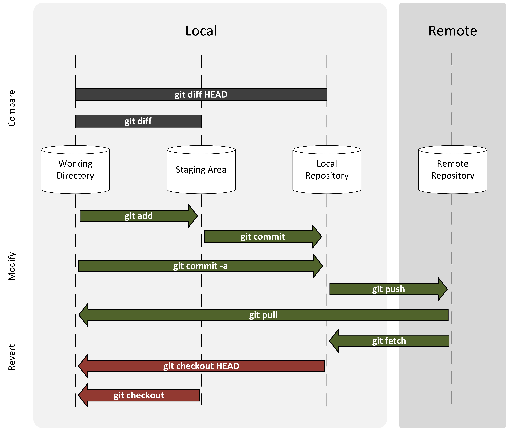

Git overview
Flowchart¶

Undo Things¶

Remote-tracking Branch¶

git init¶
Initiate local repo
git add¶
Track file/add to stage
git commit¶
git status¶
git diff¶
git log¶
Check history commit
git log
git log --pretty=oneline
git log --pretty=format:"%h-%an, %ar:%s"
git log --graph
git log --graph --all
%hsimple hash%anauthor%aredit date (from now)%adedit date%smessage
git clone¶
Cloning to a specific folder
git clone <repo> <directory>
git clone ssh://john@example.com/path/to/my-project.git my-project
git push¶
Push local feature1 branch to remote feature2 branch in origin repo
git push origin feature1:feature2
Push the locally new-created branch featureA to remote origin
git push -u origin featureA
git push --set-upstream origin featureA
Push the locally new-created branch featureB to the branch featureBee on remote origin
git push -u origin featureB:featureBee
git push remote_name local_branch:remote_branch
git checkout¶
Create a local branch named serverfix from remote origin/feature1
git checkout -b serverfix origin/feature```
## `git fetch`
``` git title='Fetch the master branch from remote to local origin/mymaster'
git fetch origin master:refs/remotes/origin/mymaster
Fetch multiple branches
fit fetch origin master:refs/remotes/origin/mymaster \ topic:refs/remotes/origin/topic
git rebase¶
Or
git reset¶
git stash¶
Save the unfinished work and keep the working directory clean to checkout to another branch
git stash
git sqush¶
.gitignore¶
Show current local repository¶
git rev-parse --show-toplevel
Nano Editing¶
Ctrl+Oorienter messageCtrl+XorEse:wqexitCtrl+Ccancel
Branches¶
- The refs for local branches are stored in the
./.git/refs/heads/ - Remote branch refs live in the
./.git/refs/remotes/ - To view your remote branches, simply pass the -r flag to the git branch command.
git branch -r - If you wish to set tracking information for this branch you can do so with:
git branch --set-upstream-to=origin/<branch> add_line